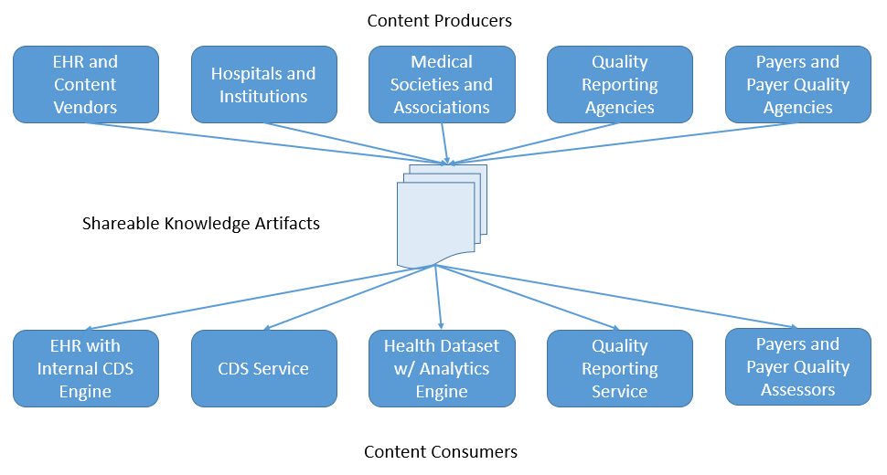

Current Build

One of the primary goals of the Clinical Quality Framework is to enable the sharing and distribution of computable clinical knowledge artifacts:
The distribution use case involves enabling knowledge artifacts to be distributed as resources via a FHIR server. The search and read interactions defined by the FHIR infrastructure can be used for this purpose. The Library, ActivityDefinition, PlanDefinition, Questionnaire, and Measure resources can all be used to represent knowledge artifacts, and so define several search parameters specifically to enable searching based on the various attributes of a knowledge artifact. A FHIR service that supports at least searching and retrieval of these resources is then a basic Knowledge Artifact Repository. More advanced knowledge management capabilities such as change management, semantic indexing, and dependency tracking can all be provided on top of this basic infrastructure.
In particular, the coverage and topic elements are intended to provide both semantic and topical indexing functionality for use in knowledge repositories. For example, the following fragment illustrates the use of the coverage attribute to indicate semantic usage context for an example suicide risk order set:
<coverage>
<patientAgeGroup>
<coding>
<system value="http://snomed.info/sct"/>
<code value="133936004"/>
<display value="Adult"/>
</coding>
</patientAgeGroup>
<clinicalFocus>
<coding>
<system value="http://snomed.info/sct"/>
<code value="87512008"/>
<display value="Mild major depression"/>
</coding>
</clinicalFocus>
<clinicalFocus>
<coding>
<system value="http://snomed.info/sct"/>
<code value="394687007"/>
<display value="Low suicide risk"/>
</coding>
</clinicalFocus>
<targetUser>
<coding>
<system value="http://snomed.info/sct"/>
<code value="309343006"/>
<display value="Physician"/>
</coding>
</targetUser>
<clinicalVenue>
<coding>
<system value="http://snomed.info/sct"/>
<code value="440655000"/>
<display value="Outpatient environment"/>
</coding>
</clinicalVenue>
</coverage>
The coverage element can contain any number of characteristics that define the particular context of use for the artifact. Note that within a single coverage element, the intended semantics are that all the characteristics that are present apply. Because each artifact may have any number of coverage elements, combinations of coverage elements convey the intended semantics that any of the coverages apply.
In addition, the coverage element is intended to convey prescriptive semantics about the appropriate context of use for an artifact, while the topic element is intended to convey descriptive semantics suitable for indexing and searching using the topic search parameter.
The FHIR search interaction specifies that search results are returned in a Bundle, and the entries in that bundle allow a score to be specified, consistent with the Decision Support Service (DSS) relevance result. Note that the DSS score range is 1 to 100, while the FHIR score range is 0..1.
The algorithm for determining relevance is not prescribed by this guidance. When calculating relevance, implementations are encouraged to take advantage of the metadata represented within the artifact to help users understand the relevance of the returned artifacts to their search criteria.
To reduce the size of returned results and ensure efficient searching and retrieval, the Bundle returned SHOULD consist only of resources of the requested type. Dependencies of the resources returned SHOULD NOT be included.
The following table lists the search criteria elements defined by the Decision Support Service (DSS) standard along with their appropriate representation in FHIR:
| DSS Search Criteria | FHIR Equivalent |
|---|---|
| Maximum Results | _count global search parameter |
| Minimum Score | KnowledgeArtifact.minScore search parameter |
| Knowledge Artifact Trait | Knowledge search parameters (identifier, topic, title, description, version) |
| Knowledge Artifact Status | KnowledgeArtifact.status search parameter |
| Evaluation Result Semantics | Not Implemented |
| Data Requirements | Not Implemented |
| Relationships to specific Knowledge Artifacts | Not Implemented |
Support for exclusion criteria as described in the DSS is provided by the :not search parameter modifier of FHIR.
Implementing at least the FHIR search and get interactions for the clinical reasoning resources (Library, ActivityDefinition, PlanDefinition, and Measure) is then a basic implementation of a Knowledge Artifact Repository. More sophisticated management functionality including semantic indexing, change management and dependency tracking can be provided on top of this basic functionality using the same resource structures.
© HL7.org 2011+. FHIR STU3 Candidate (v1.7.0-10082) generated on Thu, Oct 27, 2016 16:28+0000. QA Page
Links: Search  |
Version History |
Table of Contents |
Compare to DSTU2 |
|
Version History |
Table of Contents |
Compare to DSTU2 |
 |
Propose a change
|
Propose a change